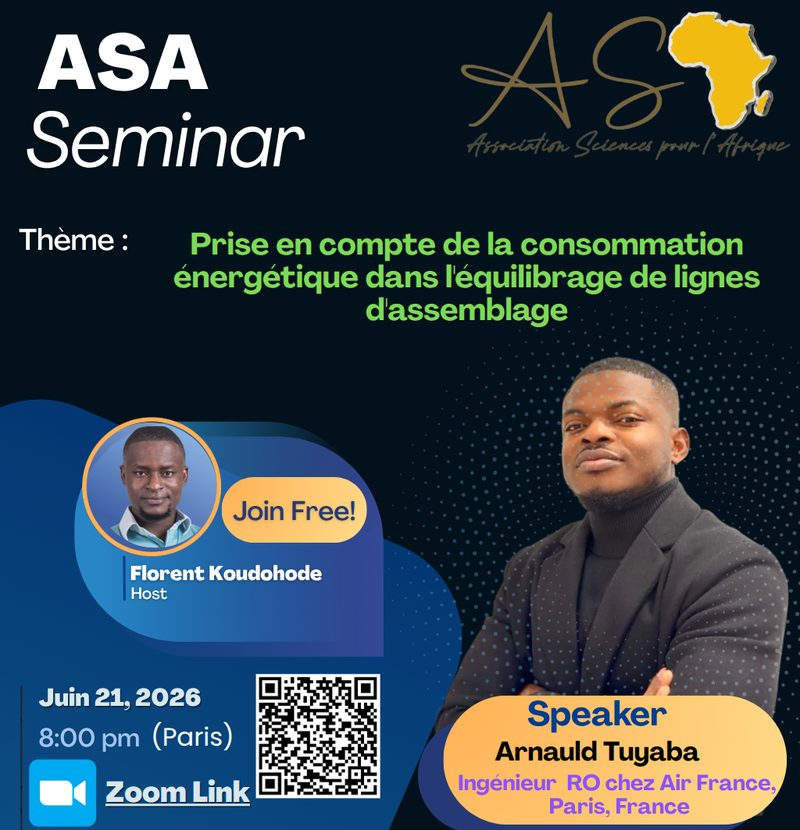

Une séance par mois, partout où l’Afrique cherche.
ASA réunit en ligne chercheuses et chercheurs africains et leurs collègues du monde entier. Depuis 2021, chaque mois, un exposé, une heure, ouvert à tous — de la thèse en cours au résultat publié.

Ce qui nous tient
Trois engagements, tirés de nos statuts, qui décident de ce que nous faisons et de ce que nous refusons de faire.
Rassembler
Personne ne cherche seul.Relier le monde scientifique africain à celui de l’extérieur : partager des expériences, des méthodes et des contacts, et donner la parole en priorité aux jeunes chercheuses et chercheurs.
Transmettre
Une idée ne vaut que comprise.Rendre les sciences lisibles pour la jeunesse africaine : exposés accessibles, articles de vulgarisation, mini-cours et jeux-concours scientifiques.
Enraciner
Chercher ici, pour ici.Bâtir sur le continent — jusqu’à un centre de recherche — et nouer des partenariats avec universités, laboratoires et organismes de financement pour y parvenir.
Trois façons d’entrer
Écouter, lire, ou prendre la parole. Tout est gratuit et en ligne.
ASA Séminaire
Un exposé par mois depuis 2021, en visioconférence. Résumés, affiches, diapositives et enregistrements des séances passées.
Parcourir 2021 → 2027Journal de vulgarisation
Notre revue en cinq pages maximum, écrite pour un lectorat non spécialiste. Le modèle LaTeX est prêt, l’appel à contributions est ouvert.
Lire et publierAdhérer
Docteur·es, doctorant·es et étudiant·es en master sont particulièrement encouragé·es. Cinq euros par mois, un formulaire, et vous êtes des nôtres.
Rejoindre l’associationLe prochain exposé est peut-être le vôtre
Thèse en cours, résultat récent, sujet de recherche que vous voulez faire connaître : le séminaire ASA accueille les travaux à tous les stades. Une heure, en ligne, devant un public bienveillant venu de plusieurs continents.
- Vous remplissez le formulaire ASA Séminaire (titre, résumé, date souhaitée).
- Nous fixons la date et préparons l’affiche avec votre photo.
- L’annonce part sur LinkedIn, Instagram, Facebook et WhatsApp.
- La séance est enregistrée et archivée sur cette page.